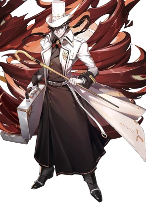

Sork
Historia
Sabe como é ser alguém que sempre acreditou na bondade humana mas foi traído pelo mesmo... Sempre fui alguém bom e sempre acreditei nos outros exatamente por isso os meus professores estavam relutantes em me deixar sair a mundo a fora, que professores você pergunta, há... foi mal esqueci dessa parte , eu nasci e cresci dentro da escola de magia de evocação, lá eles tem umas regrinhas meios chatas sabe , uma delas é a de que não é permitido sair dela até ter virado um adulto mais assim sabe eu sempre fui muito curioso e chegou um momento em que eu não poderia segurar minha curiosidade pelo o mundo real, um mundo diferente do meu normal sabe como que é , eu acho kkkkk... enfim sem poder conter essa curiosidade pela primeira vez na vida eu quebrei uma regra e fugi dela para viver e ver o mundo real. Eu vi e senti coisas que eu nem imaginaria que era possível , vivenciei coisas que até então só conhecia pelos livros e relatos que os professores comentavam , eu perdi minha fantasia pelos humanos ou melhor dizendo eu conheci a verdadeira face dos humanos pela primeira vez quando eu estava viajando até uma vila que outro viajante tinha indicado, no caminho eu vi um grupo de bandidos atacando e massacrando uma carruagem só para roubar os bens dos outros quando eu vi isso não sei o que me deu mais eu fiquei tão puto que eu carbonizei aqueles malditos até o pó kkkkkkk , ah foi mal vamos continuar quando cheguei na vila que comentei mais cedo demorou um cadinho pra me acostumar mas com o tempo eu me acostumei e até me juntei com uns caras ai sabe acho que o nome deles era preza azul... Enfim e foi assim que eu vivi até meus 20, imagina eu saí com 12 e vivi bem até os 20 incrível não kkkkk.... E pode até ser mas os outros caras não pensavam assim pelo jeito , hum não sei se eu falo... há foda-se isso é pra minha história de vida mesmo, então seguinte rolo uma situação onde nosso grupo tinha que escolher entre mata um pra salvar muitos ou salvar um e sacrifiCar muitos, ai tu pensa "porra a escolha e obvia né" mais aqueles filhos da puta do caralho não pensavam assim só porque quem deveria morrer era filho de um nobre e os parentes desse filho da puta prometeram uma recompensa gorda pra trazer o muleque de volta ai sabe o que eles falaram pra min... "que pena é assim que o mundo funciona." há prá que foi aí que eu matei o moleque filho de nobre pra salvar os outros mas assim matei com gosto mesmo sabe acho que foi a morte mais satisfatória da minha vida, só que os caboclos do meu grupinho não gostaram dessa ideia e vieram pra treta só que né eu sou um mago né então não consegue fazer muito contra 4 x 1 mas mas mas eu levei um pro inferno antes de cair kkkkkk... Enfim, quando eu acordei eu estava preso numa caverna acorrentado em uma cela junto com outros malucos lá. Continuo depois.
Mago
Status
- Hp: 9
- Mana: 13
- Str: 8(-1)= 7
- Int: 16(2)= 18
- Cha: 10(0)
- Con: 14(2)= 16
- Dex: 14(2)= 16
- Wis: 12(1) 13
Magias
- Bala de Força
- Detectar magia
- Detectar venenos
- Raio de ácido
- Raio de fogo
- Raio de frio
- Mensagem
- mais...
Inventário
- Bolsa de Ombro
- Poção estranha: 2
- Cajado